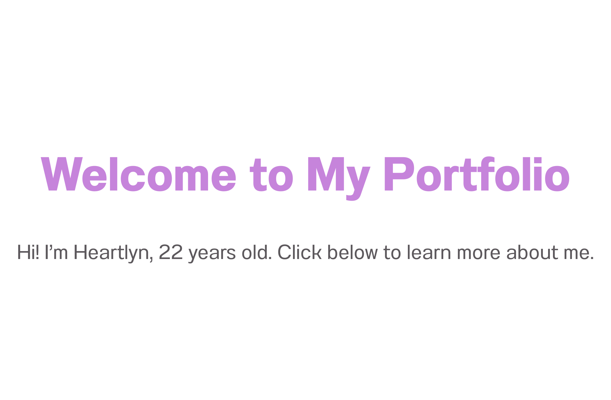

About Me Page
A simple and responsive personal portfolio page built with HTML, CSS, and JavaScript.
Live DemoMy work
A simple and responsive personal portfolio page built with HTML, CSS, and JavaScript.
Live DemoOrganize your tasks efficiently with a weekly planner that allows adding, editing, and deleting tasks.
Live DemoA simple calculator for basic math operations, built using HTML, CSS, and JavaScript.
Live Demo